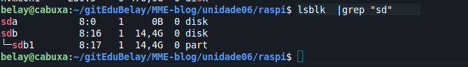
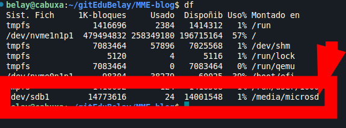
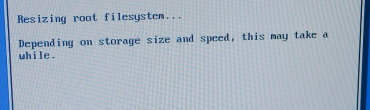
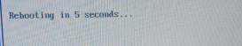
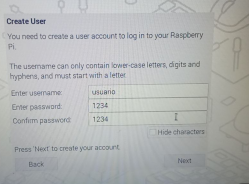
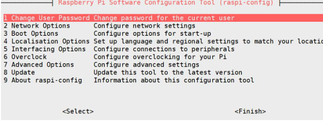

O recomendable é que revisemos na web do proxecto Raspberry Pi as últimas versións e compatibilidades dos Sistemas Operativos. Podes consultalo nesta ligazón https://www.raspberrypi.com/software/operating-systems/
Se descargas a imaxe do sistema operativo coa extesión img.xz terás que descomprimila.
unxz file.xz
Será preciso ter instalado xz-utils
sudo apt-get install xz-utils
Temos que insertar a tarxeta MicroSD no lector de tarxetas. Posteriormente inserimos no porto USB do ordenador. Neste punto pode ser que a tarxeta MicroSD sexa recoñecida automáticamente ainda así imos comprobalo.
# Buscamos todos os dispositivos sd*
lsblk |grep "sd"

No exemplo da imaxe temos que a tarxeta MicroSD atopase en /dev/sdb e que ten unha partición que ocupa todo o tamaño.
En ocasións o dispositivo móntase automáticamente polo cal é preciso comprobalo. Para iso empregamos o comando df. Podes ver esta situación na seguinte imaxe.
df

Procedemos a desmontar o dispositivo
sudo umount -l /dev/sdb1
O comando dd en Linux tamén se chama Data Duplicator e permítenos duplicar os datos a baixo nivel.
Neste caso imos instalar Raspberry Pi OS Lite cuxa release é do 21 de Febreiro de 2023 Ligazón.
O comando dd en Linux tamén se chama Data Duplicator e permítenos duplicar os datos a baixo nivel. No noso caso imos copiar a imaxe do sistema operativo na MicroSD.
# ESTE PASO PODE SER PERIGOSO, antes de darlle ao ENTER avisa ao docente para validar o comando.
sudo dd if=2023-02-21-raspios-bullseye-arm64.img of=/dev/sdb bs=4M conv=fsync
A saida será algo semellante a isto
belay@cabuxa:~/$ sudo dd if=2023-02-21-raspios-bullseye-arm64.img of=/dev/sdb bs=4M conv=fsync
[sudo] Contrasinal de belay:
204+1 records in
204+1 records out
856089772 bytes (856 MB, 816 MiB) copied, 49,4952 s, 17,3 MB/s
belay@cabuxa:~/$
Podemos verificar que se escribiron todos os datos co comando sync
sync
Tamén é recomendable revisar que o noso dispostivo /dev/sdb/ neste titorial xerou diferentes particións co comando lsblk
sdc 8:32 1 14,4G 0 disk
├─sdc1 8:33 1 256M 0 part
└─sdc2 8:34 1 3,8G 0 part
Procedemos a inserir a tarxeta MicroSD na ranura e fixándose nos pins da tarxeta e do conector. Unha vez insirida a microSD conectaremos os seguintes elementos:
Chegados a este punto comezará a sair diferentes mensaxes no monitor.
Na primeira execución RaspiOS precisa realizar as seguintes tarefas:
Expandir o sistema de ficheiros na tarxeta Micro SD. 
Xeración das chaves SSH
Reinicio do equipo .
Configuracións dos locales. 
Creación do usuario 
Configuración do monitor.
Configuración dunha rede wifi a cal ter acceso a internet e executar actualizacións. (saltamos este paso)
Reinicio do dispositivo para finalizar a configuración.
Na seguinte execución despois do reinicio xa non teremos que configurar o sistema operativo e xa podemos desfrutar da RaspberryPi
Este sistema proporciona algunhas utilidades no terminal como son:
Esta ferramenta permite xestionar a configuración básica do sistema.

Este comando accede aos pins GPIO e permite obter os valores e tamén modificalos. Exemplos:
# Obtén todos os valores do GPIO
raspi-gpio get
# Obtén os valores do GPIO co PIN 20
raspi-gpio get 20
# Muda o valor do GPIO co PIN 20
raspi-gpio get 20 a5
Agora xa temos temos o equipo preparado para realizar instalacións e configuracións ao noso entollo. Ainda así en ocasións é preciso xerar unha copia de seguridade da tarxeta MicroSD que veremos no seguinte apartado.
#apgado dende o terminal
shutdown now
Neste punto apagamos a Raspberry Pi e logo quitaremos a tarxeta microSD. Logo teremos que leer a tarxeta no computador. Os pasos son:
lsblk e atoparemos unha entrada semellante a /sdc ou /sdb, ....sudo umount -l /dev/sdb1
sudo umount -l /dev/sdb2
RECORDA que no teu equipo sdb ao mellor non existe por iso verifica no paso 1 cal é o teu. 3. Creación da imaxe da tarxeta SD
# Exemplo xenérico
sudo dd if=/dev/sdc of=backup-<fecha_imagen>.img status=progress
#Exemplo 2
sudo dd if=/dev/sdc of=backup-2023-01.01.img status=progress
ls bac* e fíxate que nos xerou unha imaxe do mesmo tamaño que a tarxeta microSDA continuación podemos restauración é aplicar o paso Duplicamos a imaxe na tarxeta SD